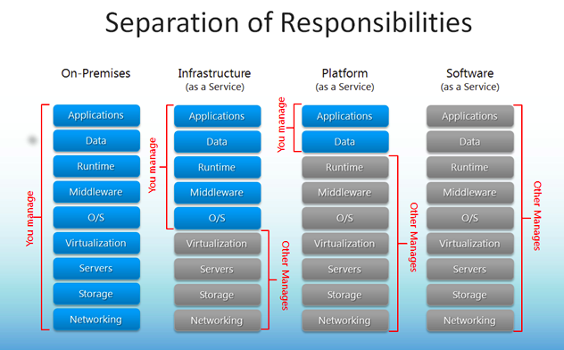

Cloud Computing and related technologies
Alberto Molina Coballes, José Luis Rodríguez Rodríguez and José Domingo Muñoz Rodríguez
Cloud Computing in European schools. Project: 2017-1-ES01-KA202-038471


Theme by: reveal.js
Disclaimer
The European Commission support for the production of this
publication does not constitute an endorsement of the contents
which reflects the views only of the authors, and the Commission
cannot be held responsible for any use which may be made of the
information contained therein
Introduction to IaaS
- General concepts
- Statistics
- IaaS (and other ..aaS) solutions providers
- What may be the next step of our project?
- Why AWS?
- Who/What companies use AWS?
IaaS. General concepts
- Infrastructure as a service (IaaS) is a form of Cloud Computing that provides virtualized computing resources over the Internet.
- IaaS is one of the three main categories of Cloud Computing services, alongside Software as a Service (SaaS) and Platform as a Service (PaaS).
- It is mainly used by system administrators.
IaaS. General concepts
- Figure to remember: 
- On IaaS, System Administrators:
-
- can manage Operating Systems and all the software running on them. It is equivalent to use Virtual Machines but not local but on the cloud. The "virtual machines" are called "instances".
- don't have to worry about installing software on the host/hosts where instances run: networking, storage, servers and virtualization; this resources are offered by technologies by the cloud.
- What is IaaS for one of the great cloud provider? Click
here .
< section>
IaaS. General concepts